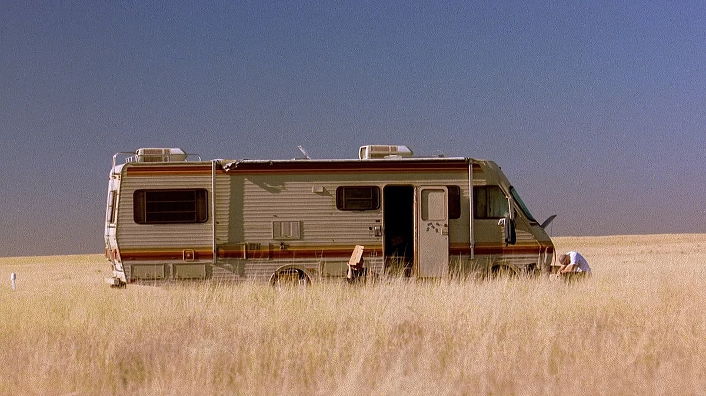
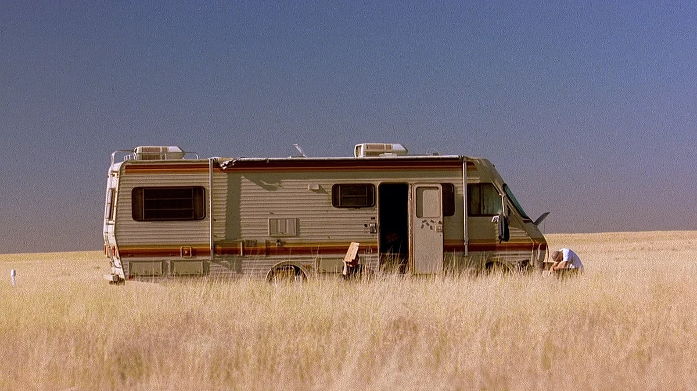

YO YO YO 148-3 TO THE 6 TO THE 9 REPRESENTING THE ABQ, WHAT UP BI*ATCH?! LEAVE AT THE TONE....
"Yo, what up? Name’s Jesse Pinkman. Born and raised in Albuquerque, New Mexico—yeah, the ABQ, baby. You probably know me as
the guy who used to cook with Heisenberg. Yeah, science, b*h! But I ain’t just some punk from the streets. I’ve been through
hell and back—lost people, made mistakes, but I always got back up. I’m not proud of everything I’ve done, but I did what I
had to do.I used to roll with the wrong crowd, cook some of the purest product the world’s ever seen, but that life? It took
everything from me. Now, I’m just trying to figure out who I am without all that chaos.But hey, don’t get it twisted—I’m still
Jesse Pinkman, and I’ll always represent the ABQ. Yo, science rules!".
In Season 1 of Breaking Bad, Jesse Pinkman starts off as a small-time meth cook and dealer, going by the street
name "Cap’n Cook". He's reckless, immature, and mostly focused on partying and making quick money.
Partnership with Walter White: Jesse’s life changes when his former high school chemistry teacher, Walter White, approaches him to team up and cook high-quality meth. At first, Jesse is skeptical, but he agrees because Walt’s product is incredibly pure and valuable.
Personal Struggles: Despite his laid-back, rebellious attitude, Jesse deals with feelings of inadequacy and loneliness. He’s often shown battling addiction and struggling with his sense of self-worth.
Dangerous Situations: Jesse gets into serious trouble with local drug dealers. One of the most intense moments is when Krazy-8 and his cousin Emilio threaten both him and Walt. This sets the stage for Jesse’s deeper involvement in the drug world.
Comic Relief and Vulnerability: While Jesse brings humor with his slang ("Yo!", "Bitch!"), we also see glimpses of his vulnerability, making him one of the show's most relatable and human characters.
🔥 Top Jesse Pinkman Quotes from Season 1
1."Yo, Gatorade me, bitch!"
2."Yeah, science! Bitch!"
3."This is my own private domicile and I will not be harassed... Bitch!"
4."So you do have a plan? Yeah, Mr. White! Yeah, science!"
5."What good is being an outlaw when you got responsibilities?"
 
